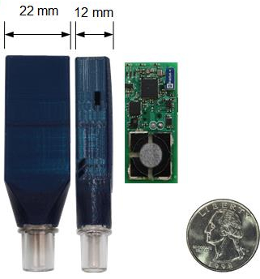
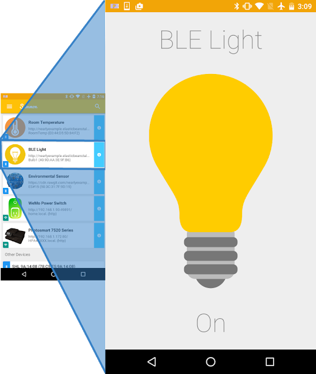
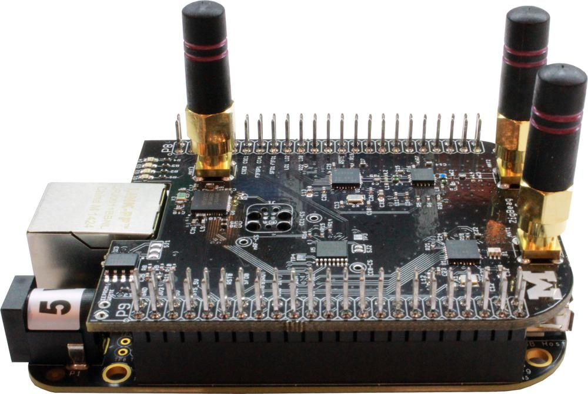
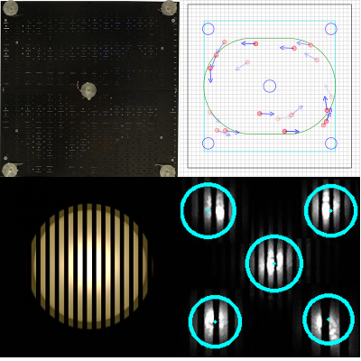
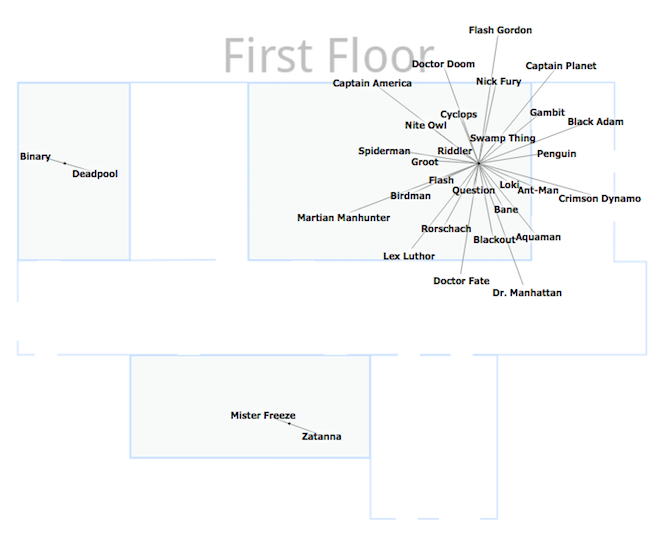

Projects Ongoing and past research.

|
Permamote 6/1/2017 - PresentExploring Reliable, Energy-Harvesting Motes |

|
Signpost 1/6/2016 - PresentDeployable, Modular, City-Scale Sensing |

|
Slocalization 2/15/2016 - PresentLow-power, backscatter indoor localization |

|
EDG 1/1/2016 - PresentGenerate hardware designs from software |

|
Powerblade 8/15/2014 - PresentLow Profile True Power Meter. |
|  |
Monoxalyze 8/1/2014 - PresentVerifiable smoking cessation |
|  |
Summon 6/1/2015 - PresentCasually browsing the web of things |

|
Polypoint 1/10/2014 - PresentAccurate UWB based indoor localization. |

|
Harmonia 05/01/2014 - PresentUltra-wideband localization using narrowband radios, square waves, and band stitching. |
|  |
GAP 05/01/2014 - PresentA 802.15.4/BLE cape for the Beaglebone Black.. |
|  |
VLC Localization 01/20/2014 - PresentAccurate indoor positioning using visible light and smartphone. |

|
GridWatch 11/01/2013 - PresentCroudsourcing power grid monitoring with smartphones. |

|
Opo 11/01/2012 - PresentSmall wearable badge for realtime human interaction tracking. |

|
Monjolo 03/01/2013 - PresentEnergy-harvesting energy meters that use side-channel activations to sense. |
|  |
Wearabouts 04/01/2014 - PresentRoom-level indoor localization based on wearable devices. |

|
M3 01/01/2012 - PresentFull sensor node in a millimeter scale package. |

|
μSDR 01/01/2010 - PresentA low power, low cost, and portable software-defined radio. |

|
EKG Sensor 12/12/2011 - 11/15/2012Low power smartphone based sensing for medical applications. |